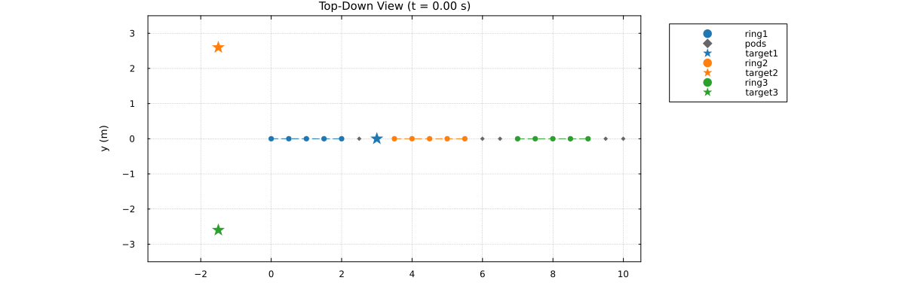

N-Ring Cyclic Escort Formation
n targets orbit a large circle, each with its own escort ring of m_i agents. The rings are also wired to each other in a cycle: one small support pod sits between each consecutive pair. Every edge in that cycle uses centroid, since neither a ring nor a pod has a single natural representative to expose on a cross-ring edge.
The whole specification is a function of n, so the topology, escort radius, and dynamics cascade all generalize; this page renders n = 3.
Each ring ends up near its own target but not on it. The next section measures exactly why.
Why a cycle, and not a tree
The previous page, wheel_formation.jl, also bridges n rings with n pods – but as a tree, spokes into a shared hub. It tracks noticeably better (own-target weight 0.74 against 0.6 here). That is not an oversight in this page's design; it is a structural limit, and worth understanding before reading the numbers below.
NestedSystemSpec is a tree of RefinedSystem/LeafTeam nodes, so every node has exactly one parent, and a SystemEdge only ever joins two children of the same parent. Now consider what a cycle asks for: ring i must be visible to the bridge on its left and the bridge on its right. Those are two different bridges, so ring i would have to be a child of two parents at once – which a tree cannot express. The wheel escapes this because all its spokes share the single hub, so one parent suffices.
The only remaining way to say "ring i bridges into both of its neighbours" is to wire the cycle's edges directly into root's own children, which is what this page does. That unmediated coupling between every adjacent pair is precisely what produces the worse cross-talk measured below.
using CellularSheaves
using CellularSheaves.ControlSheaves.NestedSystems
using CellularSheaves.ControlSheaves.NestedDSL
using CellularSheaves.ControlSheaves.AgentControllers
using LinearAlgebra
using Statistics
using Plots
using Printf
# Located from the package root, not `@__DIR__`: while Literate.jl executes a page, `@__DIR__`
# points at the *output* directory rather than at this file. The simulation driver and the
# multi-pin helpers live in `NestedSystems`, already loaded above.
include(joinpath(pkgdir(CellularSheaves), "docs", "literate", "nested", "_plot_helpers.jl"))Main.var"##3237".fade_alphaEscort radius scaling
Targets sit at angle 2π(i-1)/n on a circle of radius R_big, so adjacent targets are a chord 2 R_big sin(π/n) apart – shrinking as n grows, as it must for more targets to fit on the same circle. Ring i takes a safety fraction of that chord, scaled by its share of the largest ring's agent count, which leaves headroom for the pod between it and its neighbour.
escort_radius(n::Int, R_big::Real, m_i::Int, m_max::Int; safety::Real=0.35) =
safety * R_big * sin(pi / n) * (m_i / m_max)escort_radius (generic function with 1 method)Spec construction, parameterized by n
"""
build_n_ring_spec(n; m=fill(5, n), R_big=3.0, support_m=2, safety=0.35, D=4, pin_scheme=:redundant)
Build the `n`-ring cyclic escort specification -- the `NestedDSL` `SystemFragment` it is
written as, the lowered `NestedSystemSpec`, its compiled `SheafTower`, and the agent
index ranges for each ring/pod (into `tower.agent_vertices`, in the order the rings/pods were
added -- ring 1, pod 1, ring 2, pod 2, ..., matching `NestedSystems`'s depth-first agent
assignment).
`pin_scheme` selects how each ring observes its own target: `:redundant` (the default) pins every
other agent around the ring via `NestedSystems.redundant_pin`, while `:single` pins only
the first agent. Both are used below -- `:redundant` for the simulation, `:single` purely as a
comparison point for measuring what the redundant pin actually buys.
"""
function build_n_ring_spec(n::Int; m::Vector{Int}=fill(5, n), R_big::Real=3.0,
support_m::Int=2, safety::Real=0.35, D::Int=4,
pin_scheme::Symbol=:redundant)
@assert length(m) == n
m_max = maximum(m)
ring_name(i) = Symbol(:ring, i)
pod_name(i) = Symbol(:pod, i)
pod_radius = 0.3 * escort_radius(n, R_big, m_max, m_max; safety=safety)
# The whole cyclic topology is one `NestedDSL` fragment. Every loop below is Julia's
# own -- `@nested_system` executes its block rather than quoting it -- so the spec scales
# with `n` without the language needing any iteration construct of its own, and the `if`
# selecting a pin scheme is likewise just an `if`.
fragment = @nested_system begin
@dim D
for i in 1:n
@team $(ring_name(i)) = ring(m[i]; radius=escort_radius(n, R_big, m[i], m_max; safety=safety))
# 2-agent pods use :path (one edge) rather than :ring, to avoid the degenerate
# parallel-edge 2-cycle a :ring topology gives for exactly 2 agents.
@team $(pod_name(i)) = path(support_m; radius=pod_radius)
@target $(Symbol(:t, i))
end
for i in 1:n
@link centroid($(ring_name(i))) => centroid($(pod_name(i))) # ring_i -- pod_i
@link centroid($(pod_name(i))) => centroid($(ring_name(mod1(i + 1, n)))) # pod_i -- ring_{i+1}
end
for i in 1:n
for k in (pin_scheme == :redundant ? (1:2:m[i]) : (1:1))
@observe via($(ring_name(i)), pin_scheme == :redundant ?
redundant_pin(m[i], D, k) : project(1)) => $(Symbol(:t, i))
end
end
end
system = compile_nested_system(fragment)
ring_ranges = [agent_range(system, ring_name(i)) for i in 1:n]
pod_ranges = [agent_range(system, pod_name(i)) for i in 1:n]
return fragment, system.spec, system.tower, ring_ranges, pod_ranges
end
const N = 3
const M = fill(5, N)
const R_BIG = 3.0
const SUPPORT_M = 2
const D = 4
fragment, spec, tower, ring_ranges, pod_ranges = build_n_ring_spec(N; m=M, R_big=R_BIG, support_m=SUPPORT_M)
println("Ring radius: ", round(escort_radius(N, R_BIG, M[1], maximum(M)), digits=3), " m ",
" (chord = ", round(2R_BIG * sin(pi / N), digits=3), " m)")Ring radius: 0.909 m (chord = 5.196 m)
Why rings don't settle on their own targets
Every ring is pulled three ways: by its own target pin, and by centroid() edges to the pods on either side.
The pods are the problem. A pod has no target of its own, and it appears in only two quadratic terms, so at the joint optimum it sits exactly at the average of its two neighbouring rings' solved positions. That makes it a perfect, undamped relay. It does not merely couple a ring to its immediate neighbours – it carries every ring's influence to every other ring, all the way around the cycle, with nothing to attenuate it.
The system is linear in the target positions, so this is directly measurable: nudge one target and watch how far a ring moves.
"""
target_response_weights(tower, ring_ranges, ring_idx, n) -> Vector{Float64}
The linear response of ring `ring_idx`'s own centroid to a unit displacement of each of the `n`
targets in turn, holding the others fixed at a common base point. Sums to `1` for any ring in a
translation-invariant tower (translating every target by the same vector must translate every
ring's solved position by that same vector) -- so this is a set of blending weights, not just a
sensitivity measure.
"""
function target_response_weights(tower::SheafTower, ring_ranges, ring_idx::Int, n::Int)
base = fill([0.0, 0.0, 1.5, 1.0], n)
# Two different index conventions meet here. `ring_ranges` holds *agent* indices, which is
# what `res.sim_data` uses elsewhere on this page; `solve_hierarchical` returns values indexed
# by sheaf *vertex* (targets first, then agents). `tower.agent_vertices` converts between them.
verts = tower.agent_vertices[ring_ranges[ring_idx]]
ring_centroid(tv) = begin
q = solve_hierarchical(tower, tv)[end]
sum(q[v] for v in verts) / length(verts)
end
c0 = ring_centroid(base)
h = 1.0
return [begin
perturbed = copy(base)
perturbed[j] = base[j] .+ [h, 0.0, 0.0, 0.0]
(ring_centroid(perturbed)[1] - c0[1]) / h
end
for j in 1:n]
end
w = target_response_weights(tower, ring_ranges, 1, N)
@printf("ring1's target-response weights: own=%.3f, neighbors=%.3f/%.3f (sum=%.3f)\n", w[1], w[2], w[3], sum(w))ring1's target-response weights: own=0.600, neighbors=0.200/0.200 (sum=1.000)
Ring 1 settles at 0.6 of its own target plus 0.2 of each neighbour's, where a truly independent ring would read 1.0/0.0/0.0.
That 60/20/20 blend – not a bad edge or a bug in the pin scheme – is why the tracking-error panel below never reaches zero. It is measuring exactly this. The "Design notes" at the end of the page compare the split against a plain single-pin ring, and wheel_formation.jl separates how much of it is the cost of the cycle from the cost of having any bridge at all.
Target motion: a rigid n-gon orbiting the big circle
const ω_big, h_alt = 0.3, 1.5
target_traj(i::Int) = t -> [R_BIG * cos(2π * (i - 1) / N + ω_big * t),
R_BIG * sin(2π * (i - 1) / N + ω_big * t), h_alt, 1.0]
target_vel(i::Int) = t -> [-R_BIG * ω_big * sin(2π * (i - 1) / N + ω_big * t),
R_BIG * ω_big * cos(2π * (i - 1) / N + ω_big * t), 0.0, 0.0]
target_acc(i::Int) = t -> [-R_BIG * ω_big^2 * cos(2π * (i - 1) / N + ω_big * t),
-R_BIG * ω_big^2 * sin(2π * (i - 1) / N + ω_big * t), 0.0, 0.0]
target_trajectories = [target_traj(i) for i in 1:N]
target_velocities = [target_vel(i) for i in 1:N]
target_accelerations = [target_acc(i) for i in 1:N]3-element Vector{Main.var"##3237".var"#target_acc##0#target_acc##1"{Int64}}:
#target_acc##0 (generic function with 1 method)
#target_acc##0 (generic function with 1 method)
#target_acc##0 (generic function with 1 method)Dynamics cascade
Every agent gets QuadrotorDynamics and a shared gain by default. The pods get a softer gain through a per-child override: they have no target of their own and exist purely for structural coordination, so they should not fight the rings they bridge. This is the binding cascade doing real work, rather than the uniform root-only case centroid_formation_tracking.jl covers.
DT, STEPS = 0.05, 200
dyn = QuadrotorDynamics()
Ad, Bd = CellularSheaves.AgentControllers.discrete_matrices(dyn, DT)
Q_lqr = Matrix(Diagonal([500.0, 500.0, 500.0, 150.0, 150.0, 100.0, 100.0, 100.0, 5.0, 5.0]))
R_lqr = Matrix(Diagonal([0.005, 0.005, 0.005]))
K = CellularSheaves.AgentControllers.solve_dare(Ad, Bd, 10 * Q_lqr, R_lqr)
K_soft = CellularSheaves.AgentControllers.solve_dare(Ad, Bd, 2 * Q_lqr, R_lqr)
# Declared in the same language as the topology, in a separate fragment merged onto it: the
# gains do not exist until `solve_dare` has run. `nested_bindings` resolves the cascade alone,
# without rebuilding the tower.
bindings = nested_bindings(merge(fragment, @nested_system begin
@bind dynamics=dyn K_lqr=K
for i in 1:N
@bind $(Symbol(:pod, i)) K_lqr=K_soft
end
end))CellularSheaves.ControlSheaves.NestedSystems.SystemBinding(QuadrotorDynamics(9.81, 0.5, 0.01, 0.01), [0.0 0.0 21.166309247170133 0.0 0.0 0.0 0.0 10.52467760470746 0.0 0.0; 0.0 -1.4667218880511848 0.0 2.392340797060175 0.0 0.0 -1.0703393879965992 0.0 0.25550801774491644 0.0; 1.4667218880511848 0.0 0.0 0.0 2.392340797060175 1.0703393879965992 0.0 0.0 0.0 0.25550801774491644], Dict{Symbol, CellularSheaves.ControlSheaves.NestedSystems.SystemBinding}(:pod1 => CellularSheaves.ControlSheaves.NestedSystems.SystemBinding(nothing, [0.0 0.0 21.124325990923666 0.0 0.0 0.0 0.0 10.505796292336779 0.0 0.0; 0.0 -1.4666988342024776 0.0 2.3923102931864766 0.0 0.0 -1.070323556150252 0.0 0.25550559773198644 0.0; 1.4666988342024776 0.0 0.0 0.0 2.3923102931864766 1.070323556150252 0.0 0.0 0.0 0.25550559773198644], Dict{Symbol, CellularSheaves.ControlSheaves.NestedSystems.SystemBinding}(), Dict{Int64, CellularSheaves.ControlSheaves.NestedSystems.AgentBinding}()), :pod2 => CellularSheaves.ControlSheaves.NestedSystems.SystemBinding(nothing, [0.0 0.0 21.124325990923666 0.0 0.0 0.0 0.0 10.505796292336779 0.0 0.0; 0.0 -1.4666988342024776 0.0 2.3923102931864766 0.0 0.0 -1.070323556150252 0.0 0.25550559773198644 0.0; 1.4666988342024776 0.0 0.0 0.0 2.3923102931864766 1.070323556150252 0.0 0.0 0.0 0.25550559773198644], Dict{Symbol, CellularSheaves.ControlSheaves.NestedSystems.SystemBinding}(), Dict{Int64, CellularSheaves.ControlSheaves.NestedSystems.AgentBinding}()), :pod3 => CellularSheaves.ControlSheaves.NestedSystems.SystemBinding(nothing, [0.0 0.0 21.124325990923666 0.0 0.0 0.0 0.0 10.505796292336779 0.0 0.0; 0.0 -1.4666988342024776 0.0 2.3923102931864766 0.0 0.0 -1.070323556150252 0.0 0.25550559773198644 0.0; 1.4666988342024776 0.0 0.0 0.0 2.3923102931864766 1.070323556150252 0.0 0.0 0.0 0.25550559773198644], Dict{Symbol, CellularSheaves.ControlSheaves.NestedSystems.SystemBinding}(), Dict{Int64, CellularSheaves.ControlSheaves.NestedSystems.AgentBinding}())), Dict{Int64, CellularSheaves.ControlSheaves.NestedSystems.AgentBinding}())Run the closed-loop simulation with full feedforward
prob = NestedEscortProblem(tower, bindings, target_trajectories;
target_velocities=target_velocities,
target_accelerations=target_accelerations,
dt=DT, steps=STEPS)
res = run_nested_escort_simulation(prob; use_feedforward=true)
time_grid = 0:DT:(STEPS*DT)0.0:0.05:10.0Diagnostics: per-ring formation and tracking error over time
form_err = [zeros(STEPS) for _ in 1:N]
track_err = [zeros(STEPS) for _ in 1:N]
ring_radius = [escort_radius(N, R_BIG, M[i], maximum(M)) for i in 1:N]
for step in 1:STEPS
t = time_grid[step]
for i in 1:N
positions = [res.sim_data[step][a][1:3] for a in ring_ranges[i]]
c = sum(positions) / length(positions)
form_err[i][step] = sum(abs(norm(p .- c) - ring_radius[i]) for p in positions) / length(positions)
track_err[i][step] = norm(c[1:2] .- target_trajectories[i](t)[1:2])
end
endPlots
cs = palette(:tab10)
ring_color(i) = cs[mod1(i, 10)]
# Panel 1: top-down view, and the animated version below both need consistent axis limits --
# computed once, from every agent and target position across the whole run.
all_x = Float64[]; all_y = Float64[]
for rngs in (ring_ranges, pod_ranges), rng in rngs, a in rng, step in 1:STEPS
push!(all_x, res.sim_data[step][a][1]); push!(all_y, res.sim_data[step][a][2])
end
for traj in target_trajectories, t in time_grid[1:STEPS]
p = traj(t)
push!(all_x, p[1]); push!(all_y, p[2])
end
const TOPDOWN_XLIM = (minimum(all_x) - 0.5, maximum(all_x) + 0.5)
const TOPDOWN_YLIM = (minimum(all_y) - 0.5, maximum(all_y) + 0.5)
# Panel 1 proper: a composite of the whole run. Every agent's full path is drawn thin and faint
# (dt is far finer than a static plot needs); ring/pod outlines are drawn at sparse, evenly-spaced
# snapshots (not one per step) with alpha fading from faint (early) to solid (final).
function top_down_composite(; n_snapshots::Int=8)
snaps = snapshot_steps(STEPS, n_snapshots)
p = plot(title="Top-Down View (full trajectory)", aspect_ratio=1,
xlabel="x (m)", ylabel="y (m)", xlims=TOPDOWN_XLIM, ylims=TOPDOWN_YLIM,
legend=:outertopright)
for i in 1:N
for a in ring_ranges[i]
px = [res.sim_data[s][a][1] for s in 1:STEPS]
py = [res.sim_data[s][a][2] for s in 1:STEPS]
plot!(p, px, py, color=ring_color(i), alpha=0.1, linewidth=1, label="")
end
for (si, s) in enumerate(snaps)
a = fade_alpha(si, length(snaps))
fx = [res.sim_data[s][v][1] for v in ring_ranges[i]]
fy = [res.sim_data[s][v][2] for v in ring_ranges[i]]
plot!(p, [fx; fx[1]], [fy; fy[1]], color=ring_color(i), linestyle=:dash, alpha=a,
label=(s == snaps[end] ? "ring$i" : ""))
scatter!(p, fx, fy, color=ring_color(i), markersize=3, alpha=a, label="")
px = [res.sim_data[s][v][1] for v in pod_ranges[i]]
py = [res.sim_data[s][v][2] for v in pod_ranges[i]]
scatter!(p, px, py, color=:gray40, markersize=3, marker=:diamond, alpha=a,
label=(i == 1 && s == snaps[end] ? "pods" : ""))
end
tp = [target_trajectories[i](t) for t in time_grid[1:STEPS]]
plot!(p, [q[1] for q in tp], [q[2] for q in tp], color=ring_color(i), linestyle=:dot, alpha=0.5, label="")
for (si, s) in enumerate(snaps)
pt = target_trajectories[i](time_grid[s])
a = fade_alpha(si, length(snaps))
scatter!(p, [pt[1]], [pt[2]], marker=:star5, markersize=(s == snaps[end] ? 9 : 5),
color=ring_color(i), alpha=a, label=(s == snaps[end] ? "target$i" : ""))
end
end
return p
end
p1 = top_down_composite()
# The animated version reuses the same per-step rendering in miniature -- current positions and
# outline only, no accumulated trail (the composite above already shows the whole run at once).
function top_down_frame(step::Int)
t = time_grid[step]
p = plot(title=@sprintf("Top-Down View (t = %.2f s)", t), aspect_ratio=1,
xlabel="x (m)", ylabel="y (m)", xlims=TOPDOWN_XLIM, ylims=TOPDOWN_YLIM,
legend=:outertopright)
for i in 1:N
fx = [res.sim_data[step][a][1] for a in ring_ranges[i]]
fy = [res.sim_data[step][a][2] for a in ring_ranges[i]]
scatter!(p, fx, fy, color=ring_color(i), markersize=4, label="ring$i")
plot!(p, [fx; fx[1]], [fy; fy[1]], color=ring_color(i), linestyle=:dash, label="")
px = [res.sim_data[step][a][1] for a in pod_ranges[i]]
py = [res.sim_data[step][a][2] for a in pod_ranges[i]]
scatter!(p, px, py, color=:gray40, markersize=3, marker=:diamond, label=(i == 1 ? "pods" : ""))
tp = [target_trajectories[i](tt) for tt in time_grid[1:step]]
plot!(p, [q[1] for q in tp], [q[2] for q in tp], color=ring_color(i), linestyle=:dot, alpha=0.5, label="")
pt = target_trajectories[i](t)
scatter!(p, [pt[1]], [pt[2]], marker=:star5, markersize=9, color=ring_color(i), label="target$i")
end
return p
end
# Panel 2: per-ring formation radius error.
p2 = plot(title="Formation Radius Error", xlabel="time (s)", ylabel="error (m)")
for i in 1:N
plot!(p2, time_grid[1:STEPS], form_err[i], color=ring_color(i), label="ring$i", linewidth=2)
end
# Panel 3: per-ring centroid tracking error -- the 40% (own weight 0.6, not 1.0) that the
# redundant pin leaves on the table, per the "Why rings don't settle on their own targets"
# section above.
p3 = plot(title="Centroid Tracking Error", xlabel="time (s)", ylabel="error (m)")
for i in 1:N
plot!(p3, time_grid[1:STEPS], track_err[i], color=ring_color(i), label="ring$i", linewidth=2)
end
# Panel 4: the coarse topology over time -- ring and pod centroids joined in cycle order, at the
# same sparse snapshots as panel 1. Shows the cycle closing as declared at every snapshot, not
# just the last, and traces the whole structure's arc through time.
p4 = plot(title="High-Level Topology Over Time (Ring/Pod Centroids)", aspect_ratio=1,
xlabel="x (m)", ylabel="y (m)")
# Skip the start of the run: agents begin from the default airstrip layout, and including that
# transient would stretch this panel's axes around one uninformative outlier. Panels 2 and 3
# already cover the convergence.
topo_snaps = snapshot_steps(STEPS, 9)[2:end]
for (si, s) in enumerate(topo_snaps)
a = fade_alpha(si, length(topo_snaps))
node_xy = Vector{Tuple{Float64,Float64}}()
for i in 1:N
rc = sum(res.sim_data[s][v][1:2] for v in ring_ranges[i]) / length(ring_ranges[i])
push!(node_xy, (rc[1], rc[2]))
scatter!(p4, [rc[1]], [rc[2]], color=ring_color(i), markersize=(s == topo_snaps[end] ? 8 : 4),
alpha=a, label=(i == 1 && s == topo_snaps[end] ? "ring centroid" : ""))
pc = sum(res.sim_data[s][v][1:2] for v in pod_ranges[i]) / length(pod_ranges[i])
push!(node_xy, (pc[1], pc[2]))
scatter!(p4, [pc[1]], [pc[2]], color=:gray40, marker=:diamond,
markersize=(s == topo_snaps[end] ? 6 : 3), alpha=a,
label=(i == 1 && s == topo_snaps[end] ? "pod centroid" : ""))
end
cyc_x = [pt[1] for pt in node_xy]; push!(cyc_x, node_xy[1][1])
cyc_y = [pt[2] for pt in node_xy]; push!(cyc_y, node_xy[1][2])
plot!(p4, cyc_x, cyc_y, color=:black, linewidth=(s == topo_snaps[end] ? 1.5 : 1.0), alpha=a * 0.7,
label=(s == topo_snaps[end] ? "cycle" : ""))
end
plot(p1, p2, p3, p4, layout=(2, 2), size=(1100, 900),
plot_title="$N-Ring Cyclic Escort Formation (centroid-wired)")
@printf("Mean steady-state tracking error (last 20%% of run): %.3f m (ring radius = %.3f m)\n",
sum(mean(track_err[i][round(Int, 0.8STEPS):end]) for i in 1:N) / N, ring_radius[1])Mean steady-state tracking error (last 20% of run): 1.800 m (ring radius = 0.909 m)
Note in the topology panel that the pods sit closer to the group centroid than a naive "midpoint of the two targets it bridges" would predict. A pod has no target of its own, so it sits at the midpoint of its neighbours' actual – already blended – positions, compounding the same effect one step further.
Animated top-down view
Same top_down_frame function as panel 1 above, stepped through the run – watch each ring hold reasonably close to its own orbiting target while the pods visibly bridge between them.
anim = @animate for step in 1:4:STEPS
top_down_frame(step)
end
gif(anim, "n_ring_formation_top_down.gif", fps=10)Plots.AnimatedGif("/home/runner/work/CellularSheaves.jl/CellularSheaves.jl/docs/src/generated/nested/n_ring_formation_top_down.gif")
println("N-ring cyclic escort formation example complete.")N-ring cyclic escort formation example complete.
Design notes: alternatives considered
Two approaches were tried and rejected while building this example, recorded here for anyone tempted to revisit either.
Weakening the pod coupling with a scaled RawRestriction. Scaling both ends of each cyclic edge by α < 1 does reduce the pull as α → 0, but only down to a floor set by the single-pin boundary offset (see centroid_formation_tracking.jl). Pushing α below that floor made the harmonic solve's automatic nullity threshold misclassify the now very weak edges as null directions, blowing the solution up entirely. Not a usable knob.
Adding more redundant pins. The measurement above explains the limited payoff: the blend is not an edge-count imbalance that more edges could out-vote. It comes from the pods providing an undamped path to every other ring's target, and strengthening one ring's own pin does not remove that path. To size the effect the redundant pin does buy, compare it against a plain single pin on the same topology:
_, _, tower_single, ring_ranges_single, _ = build_n_ring_spec(N; m=M, R_big=R_BIG, support_m=SUPPORT_M,
pin_scheme=:single)
w_single = target_response_weights(tower_single, ring_ranges_single, 1, N)
@printf("single pin: own=%.3f, neighbors=%.3f/%.3f\n", w_single[1], w_single[2], w_single[3])
@printf("redundant pin: own=%.3f, neighbors=%.3f/%.3f\n", w[1], w[2], w[3])single pin: own=0.556, neighbors=0.222/0.222
redundant pin: own=0.600, neighbors=0.200/0.200
The redundant pin moves ring 1's own weight from about 0.56 to 0.6: a real improvement and worth having, but nowhere near the 1.0 an independent ring would show. That remaining gap is the honest cost of a cyclic topology whose bridges have no anchor of their own.
println("Design notes complete.")Design notes complete.